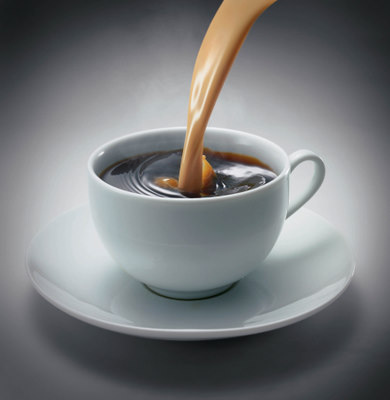

6 beneficios de salud del café

Por:Dennys Marquez
Fecha: Martes 23 de Mayo del 2021
La mayoría de los estudios concuerdan en que un consumo moderado de café, entre tres y cuatro tazas al día, es beneficioso para la salud, ya que aporta nutrientes y protege al organismo contra ciertas enfermedades.
Estos son algunos de los principales beneficios de beber café.
| Ayuda a quemar grasas |
Aporta nutrientes |
Fuente de antioxidantes |
Es un material breve, sencillo y accesible para los niños/as.
Sus temas son del interés de los niños y fácilmente tratables en la clase.
El soporte gráfico de que constan facilita la lectura comprensiva a los alumnos y alumnas, a la vez que la hace más amena.
Promueve el desarrollo de capacidades como la comprensión,la interpretación,la síntesis, la indagación, el sentido temporal y espacial.
Crea un ambiente ameno en la clase.
Es una fuente de motivación para los alumnos, por su lectura fácil y amena y por su sentido del humor.
|
Ácido pantoténico: también denominado vitamina B5, es necesario para metabolizar los alimentos y obtener energía de ellos, ya sean hidratos de carbonos, grasas o proteínas.
Manganeso: este mineral es clave para la producción de cartílago y es de gran ayuda para prevenir la osteoporosis. Además, mejora la memoria, disminuye el cansancio y la irritabilidad.
Potasio: este electrolito es fundamental para la salud muscular y además ayuda a contrarrestar los efectos negativos del sodio en personas con problemas de presión arterial alta.
Magnesio: este mineral ayuda a regular los niveles de azúcar en la sangre y regula el funcionamiento del sistema nervioso y muscular.
|
A las vitaminas y minerales que contiene una taza de café se agrega una importante carga de antioxidantes, especialmente polifenoles y ácidos hidroxicinámicos.
Los antioxidantes son necesarios para combatir el ataque de los radicales libres, retrasando el proceso natural de envejecimiento y previniendo enfermedades.
|
| Disminuye la probabilidad de contraer enfermedades |
Protege el corazón e hígado |
Reduce el riesgo de desarrollar ciertos tipos de cáncer |
Diabetes tipo 2
Alzheimer
Parkinson
|
Además de combatir enfermedades crónicas y degenerativas, el café ayuda a cuidar la salud del hígado previniendo y retardando el desarrollo de enfermedades como la cirrosis y el hígado graso.
Asimismo, se ha demostrado que el café no incrementa la presión sanguínea cuando es consumido diariamente ya que el cuerpo se acostumbra y el efecto se disipa. A esto se agrega que consumir café regularmente disminuye el riesgo de padecer un accidente cerebro vascular.
|
Tomar café diariamente de forma moderada reduce la probabilidad de desarrollar cáncer de hígado y colorrectal.
Uno de los tipos más frecuentes y con mayor mortalidad entre la población.
El café es un gran aliado en la dieta, no solo aporta energía, sino también provee al organismo de vitaminas, minerales y antioxidantes fundamentales para combatir diversas enfermedades. Contar con una empresa de café que ofrezca servicios y productos de calidad, como los que ofrece Rentokil Initial Chile con Musetti , Origenes y Supercoffee, será importante para así aprovechar al máximo todas las propiedades de esta reconfortante bebida.
|